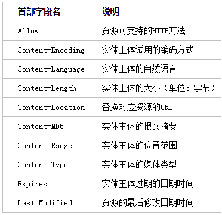

二、http详细理解
###虚拟主机
一台http服务器允许搭建多个web站点，这时候可以利用虚拟主机去完成，外表看上去是多个域名，实际对应的都是同一台服务器，同一个ip。所以在客户端进行请求时，Host首部字段的域名是十分重要的，用来区分到底是访问的哪个域名的站点。
###转发程序
一、代理
代理在客户端和服务器端扮演了中间人的角色，接收客户端的请求然后转发给服务器端，接收服务器端的响应再转发给客户端。代理服务器可以设置一些缓存，提高访问效率，当客户端再次访问相同的请求时，就可以直接从代理服务器上拿到结果，而不必再去请求服务器端。代理服务器同时也应用于各大公司，用于限制一些网站的访问、获取访问日志。
二、网关
一个网络连接到另一个网络的“关口”。当一台计算机想连接外部网络时，必须设置网关。但是网关可以去连接非http协议的服务器，并且可以在客户端和网关之间的通信线路上加密。
三、隧道
可以在客户端和服务器端建立一条经过SSL加密后的隧道，在通信结束后双方断开。隧道的目的就是确保通信的安全。
###Http首部字段
首部字段由首部字段名和字段值构成，字段值可以是一个、也可以是多个。
1、通用首部字段：
Cache-Control:public 表明任何用户都可以利用缓存
Cache-Control:private 表明其他用户不能利用缓存
Cache-Control:no-cache 如果是客户端发送的，表明客户端不要从缓存中读取过期数据；如果是服务器端发送的，相当于告诉客户端不要缓存数据
Cache-Control:s-maxage=604800 该参数表明，当使用代理服务器时，判断缓存存在的时间比604800小，则使用缓存，但是仅对多用户之间生效（maxage适用于单用户）。
Cache-Control:only-if-cached 表明仅存在缓存的时候才返回
Cache-Control:no-transform 表明无论响应还是请求，缓存都不能改变实体主体的媒体类型。可防止缓存或代理压缩图片。
Connection:Keep-Alive 表明http链接的持久性，当服务器想断开连接时发送Connection:close。
Pragma:no-cache 只存在客户端发送的请求中，是http1.1之前的历史遗留字段，代表指定所有的中间服务器都不得使用缓存。一般组合Cache-Control:no-cache进行使用。
Transfer-Encoding:chunked 表明是分块传输编码
Upgrade:TLS/1.0 表明客户端询问服务器端是否可使用TLS/1.0进行通信。需配合Connection:Upgrade使用。
2、请求首部字段
Accept:text/plain;q=0.3,text/htm 客户端可接收的媒体类型及优先级
Accept-Charset:utf-8;q=0.9 字符集及字符集的优先级
Host：www.baidu.com 主机的域名
Range:bytes=5006-10000 这是获取部分资源的范围请求，该示例表明获取第5006到10000字节的资源。
Referer：http://m.csdn.net/ 代表当前这个请求是从http://m.csdn.net/页面发起的。
User-Agent:Mozilla/5.0 (iPhone; CPU iPhone OS 9_1 like Mac OS X) AppleWebKit/601.1.46 (KHTML, like Gecko) Version/9.0 Mobile/13B143 Safari/601.1
将浏览器信息、代理服务器的名称等传给服务器
3、响应首部字段
Accept-Ranges:bytes 表明可以接受范围请求，none表示不可以接受范围请求
Server：Apache/2.2.17(Unix) 服务器端使用的http服务器应用程序的信息
4、实体首部字段

Allow:Get,HEAD 服务器端告诉客户端能支持的方法。如果此时请求了Post方法，则服务器端会返回405
###HTTPS
http是未加密的协议，所以http存在以下问题：
1、通信使用明文，有可能被窃听
2、不验证通信双方的身份，有可能遭遇伪装
3、无法证明报文的完整性，有可能被篡改
解决方式：最常用的解决窃听的方法，是https和“内容加密”；ssl的证书方式解决伪装；数字签名的方式解决篡改问题。解决上述三个问题的方式是Https。https并不是一种协议，而是http的某部分通信接口用SSl或者TLS代替，SSL不仅可以和http组合使用，还可以和其他协议组合使用，如SMTP和telnet等。
了解ssl前，先了解一下常用的加密方式，常见的加密方式有两种：
1、共享密钥
共享密钥是指加密和解密的是同一个密钥，这就有可能造成密钥在通信的过程中被劫持
2、公开密钥
两个密钥，一个公开密钥用于加密，一个私有密钥用于解密，但缺点是效率低
SSL采用混合式加密机制，即用公开密钥传递共享秘钥后，今后的通信都用共享密钥进行通信。但是没有办法验证公开密钥的合法性，所以引入了SSL证书，由通信双方都信任的机构颁发的证书来获取公开密钥。由于如何将证书安全的转交给浏览器是一件困难的事儿，所以浏览器会预制一些常用的机构的证书。还有一个是客户端证书，比如U盾要求安装的客户端证书。也可以用openSSL这套开源程序，建立自签名证书。
Comments